Then afterwards use the same method to craft a crafting table with four planks
Here is a visualization
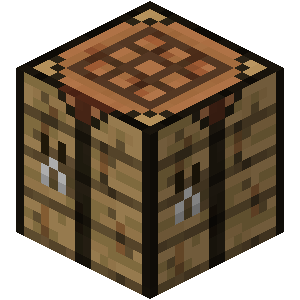 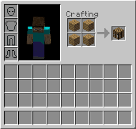Now once the crafting table is obtained the player should be able to craft more complex recipes with it
Here are the following
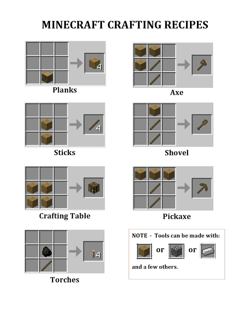
Note: new players shouldn't have to worry about memorizing these recipes as these will be shown in the crafting menu as long as the player has the right materials
HERE ARE SOME OF THE RECIPIES
TOOLS and WEAPONS
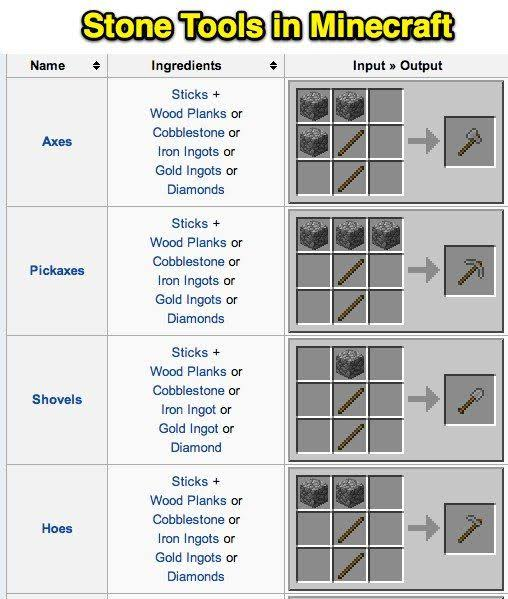ARMOR
Leather:
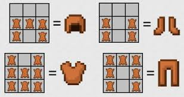Iron
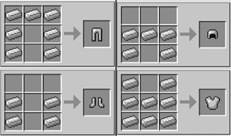Gold
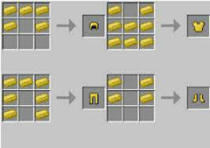Diamond
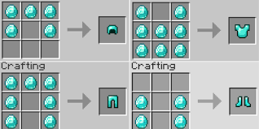And for netherite you need a smithing table
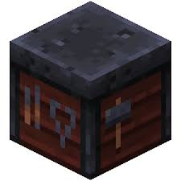
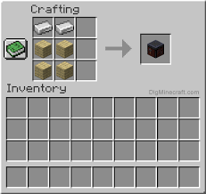
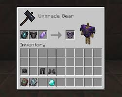
This also applies to weapons

OTHERS
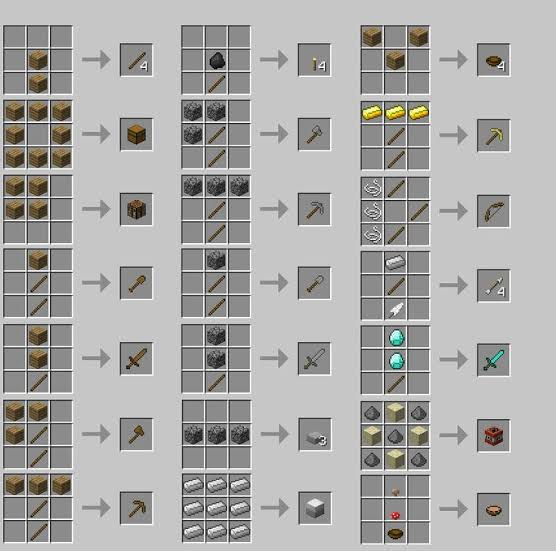Also
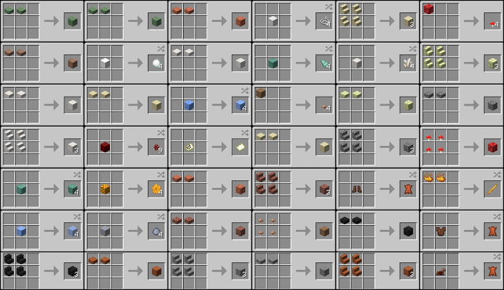